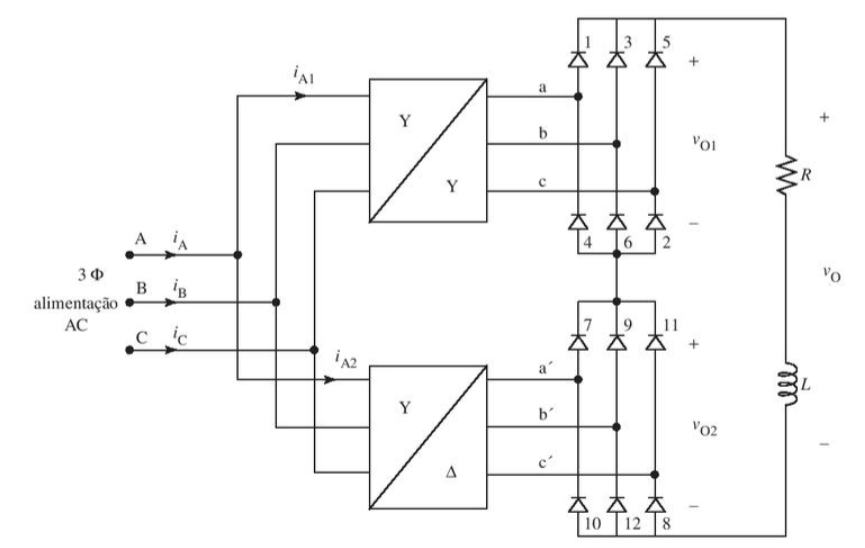
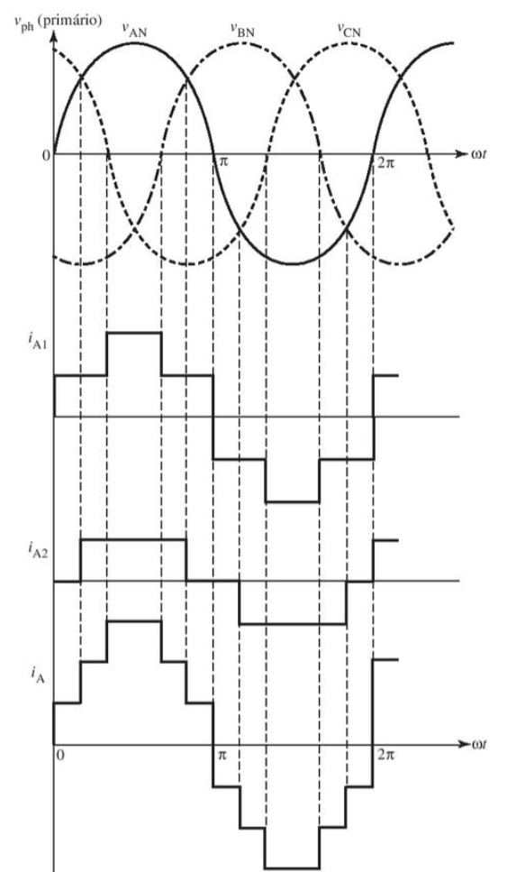
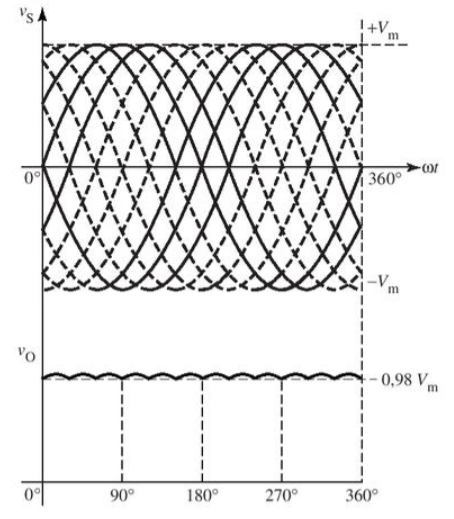

Retificador Trifásico Não controlados em ponte Doze Pulsos
O retificador trifásico não controlado em ponte doze pulsos converte uma tensão elétrica alternada (AC) em uma tensão elétrica contínua (DC). Ele é composto por doze diodos, um transformador trifásico e um filtro capacitivo.
As formas de onda da tensão de entrada e de saída do retificador são mostradas na figura abaixo.
Por conta de utilizar mais pulsos, sua forma de onda se aproxima muito a uma onda senoidal. Seus pontos positivos são: Maior eficiência, que geralmente é superior a 90%. Por conta de funcionar com 12 pulsos, sua distorção harmônica é inferior a 10%. A forma de onda da tensão de saída é a saída de doze-pulsos, com frequência de ondulação igual a doze vezes a frequência da fonte.
